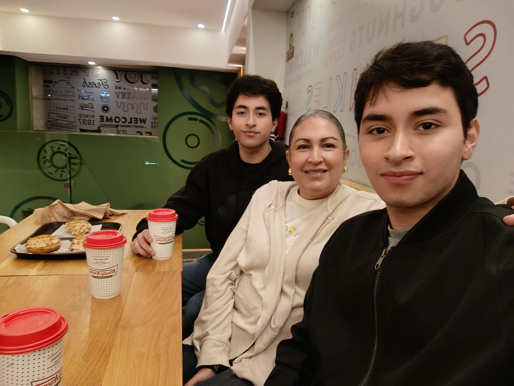

Roberto André Rodríguez González
Mi nombre es Roberto André Rodríguez González y soy estudiante de 6to Perito en Indormática. De pequeño queria ser policía, pero no fue hasta mis 15 años, cuando recibí mi primer teléfono que fue cuando me di cuenta de que me gusta mucha la tecnología, tal vez no tanto la parte del hardware, pero me llamaba mucho la atencion el software. Algo gracioso es que casi no elijo la carrera de Informática, ya que por inseguridad creia que no iba ser bueno en esto, pero a ultimo momento me cambie de carrera, cuando lo recuerdo me da risa, y aunque tal vez no soy el mejor en esto, al menos doy lo mejor de mi, ya que es algo que me gusta y de lo que en un futuro no muy lejano me gustaria estar trabajando.
Además, disfruto del basketball, los videojuegos y viajar, esos seria un poco de mi..
Mi objetivo principal es graduarme de Perito en Informática, y si es posible quedarme trabajando en la empresa en donde haga mis práticas, y si no es posible buscar trabajo en un call center, bilingue si es posible, para poder seguir estudiando lo que me gusta. Ente otros aspectos tambien me gustaria aprender más sobre el mundo de la programación y tal vez algun día hacer mis propias aplicaciones o webs.
"Mi sueño es poder ir a trabajar a otro país haciendo lo que me gusta, la ventaja es que por mi carrera es sueño es posible."
Busco dominar tecnologías modernas y sobre todo mejorar mi creatividad, ya que no soy muy bueno en eso.